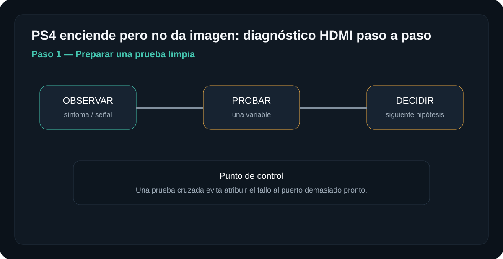
SOPORTE Y REPARACIÓN
Encuentra el problema. Sigue el diagnóstico.
Guías técnicas pensadas para resolver problemas reales sin recorrer páginas interminables. Elige un equipo, busca un síntoma y avanza por pruebas concretas.
⌕
Mostrando guías destacadas.
MÉTODO NÚCLEOTECH
Ver una guía completa →Identificar → medir → comparar → reparar → verificar
No recomendamos cambiar piezas por intuición. Cada guía intenta llevarte de un síntoma a una prueba, del resultado a una hipótesis y de ahí a una reparación verificable.
GUÍAS DESTACADAS
Empieza por aquí
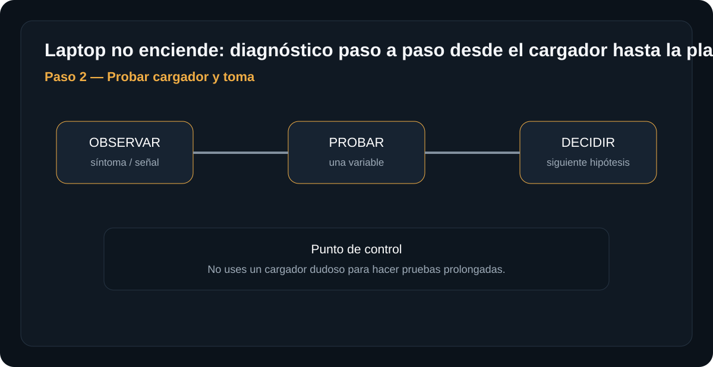

Mantenimiento
Mantenimiento preventivo de PC
Checklist de limpieza, temperatura, almacenamiento y respaldo.
Abrir guía →BIBLIOTECA COMPLETA
Procedimientos disponibles
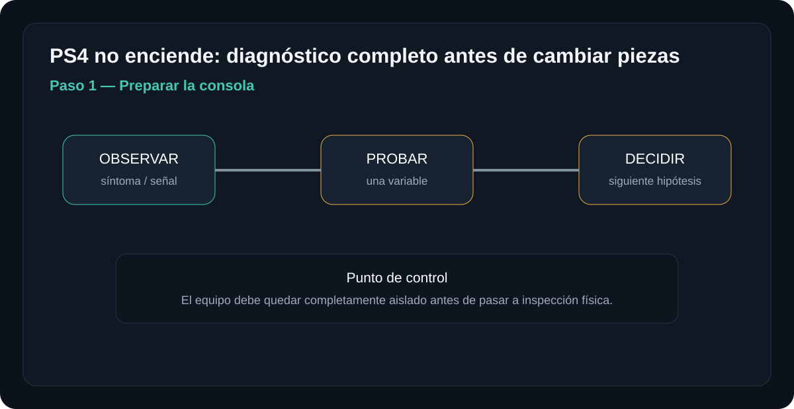
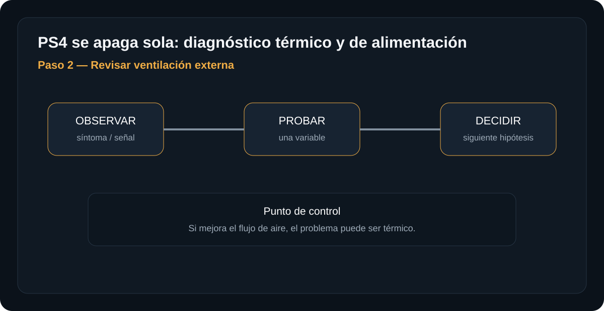
Consolas
PS4 se apaga o se calienta
Temperatura, ventilación y diagnóstico sin cambiar piezas a ciegas.
Abrir guía →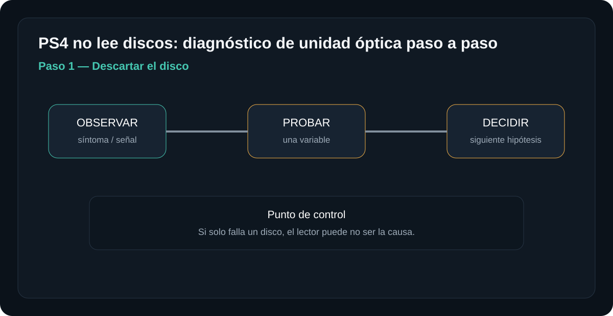
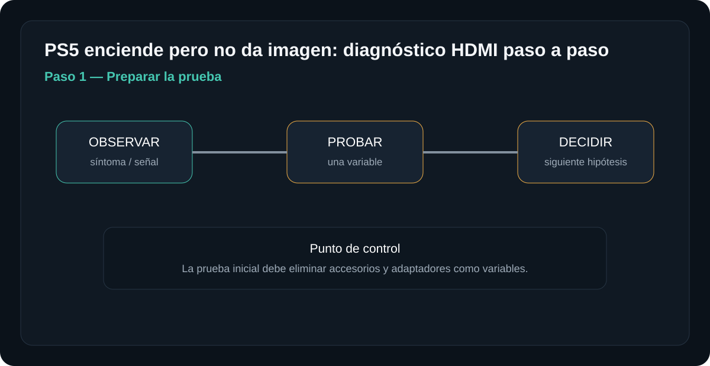
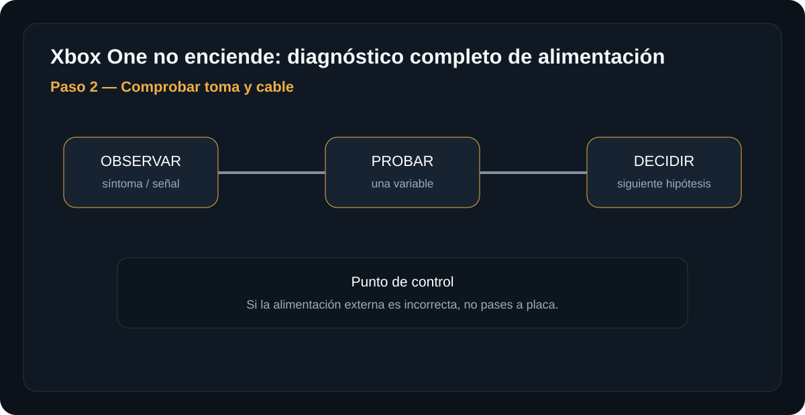
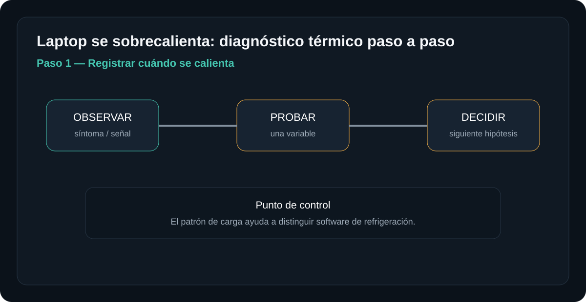
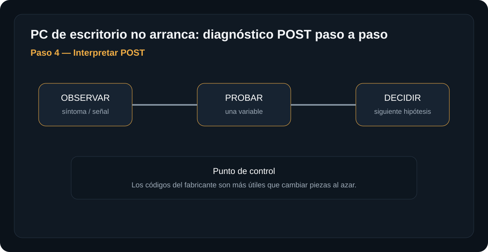
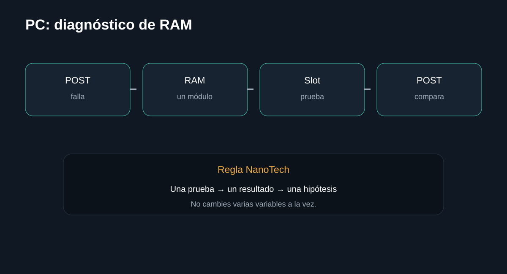
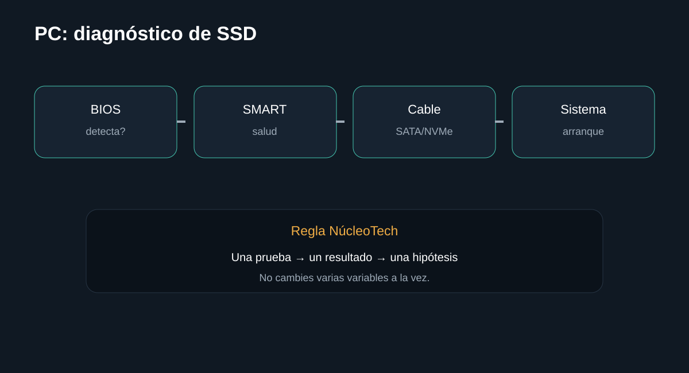

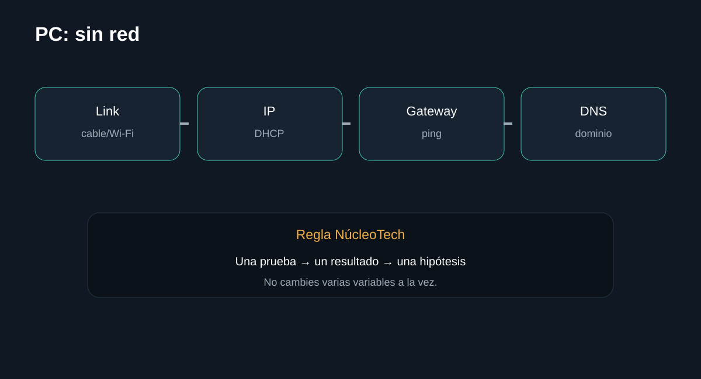

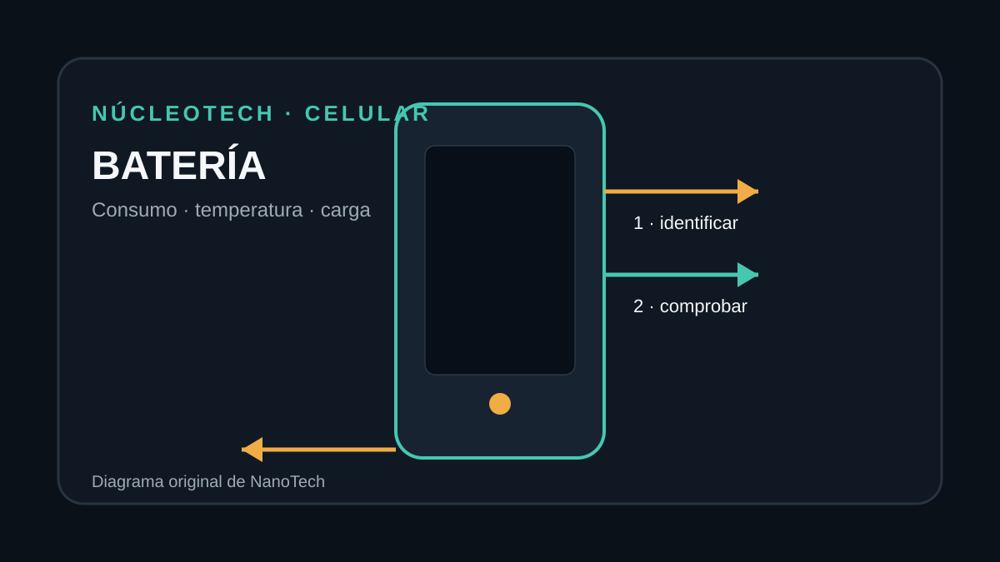
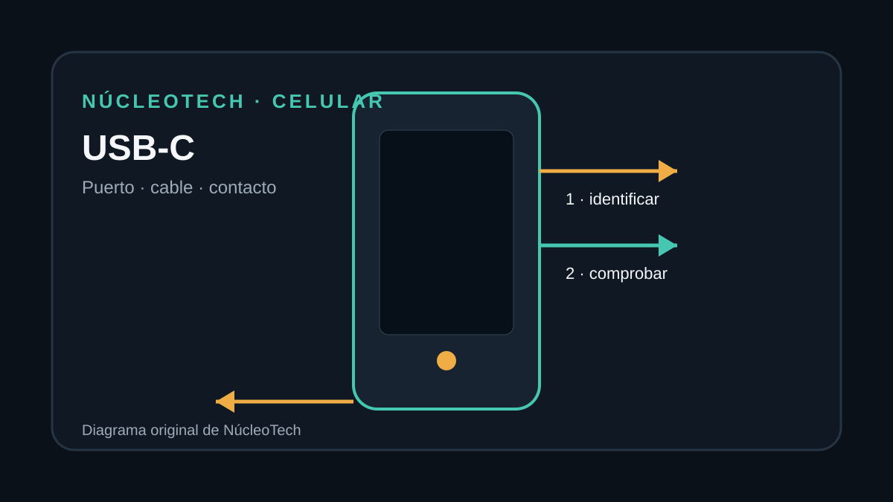
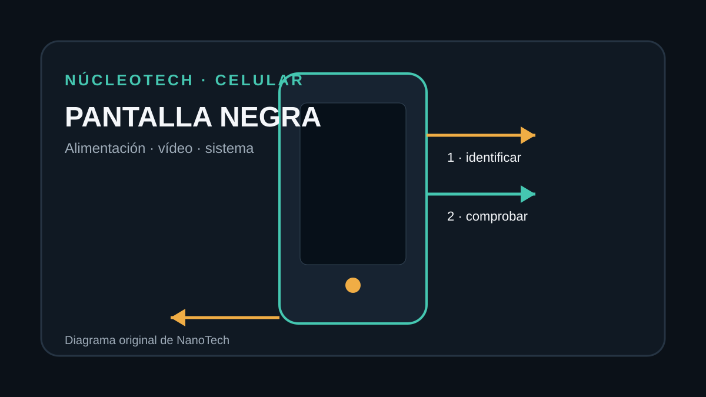
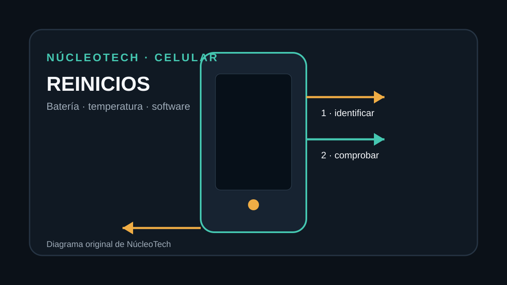
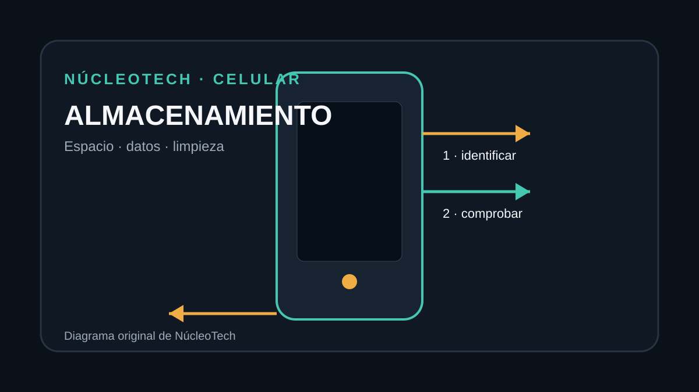
Celulares
Celular con poco almacenamiento
Diagnóstico y limpieza sin borrar datos importantes.
Abrir guía →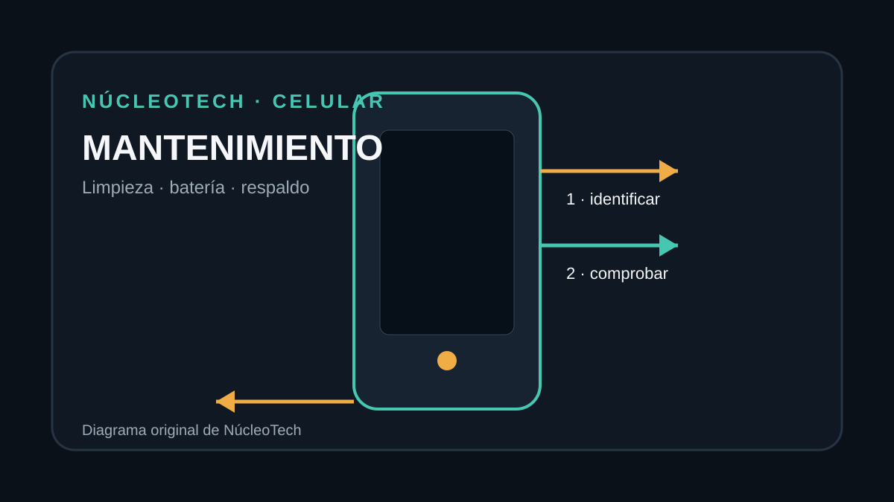
Mantenimiento
Mantenimiento preventivo de PC
Checklist de limpieza, temperatura, almacenamiento y respaldo.
Abrir guía →Mantenimiento
Mantenimiento preventivo de equipos
Rutinas para reducir fallas y documentar el estado.
Abrir guía →No encontramos una guía con ese término. Prueba con otro síntoma, componente o dispositivo.
SEGMENTO INDEPENDIENTE
Abrir MikroTik →¿Tu problema es de red o MikroTik?
Ve a la biblioteca de RouterOS. Allí cada procedimiento separa consultas, configuración, verificación y comandos de diagnóstico.